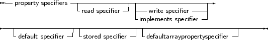
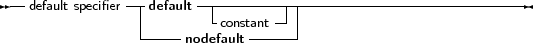

Classes can contain properties as part of their fields list. A property acts like a normal field, i.e. its
value can be retrieved or set, but it allows to redirect the access of the field through
functions and procedures. They provide a means to associate an action with an assignment
of or a reading from a class ’field’. This allows for e.g. checking that a value is valid
when assigning, or, when reading, it allows to construct the value on the fly. Moreover,
properties can be read-only or write only. The prototype declaration of a property is as
follows:
_________________________________________________________________________________________________________Properties



___________________________________________________________________
A read specifier is either the name of a field that contains the property, or the name of a
method function that has the same return type as the property type. In the case of a simple type,
this function must not accept an argument. In case of an array property, the function must accept
a single argument of the same type as the index. In case of an indexed property, it must accept a
integer as an argument.
A read specifier is optional, making the property write-only. Note that class methods cannot be
used as read specifiers.
A write specifier is optional: If there is no write specifier, the property is read-only. A write
specifier is either the name of a field, or the name of a method procedure that accepts as a sole
argument a variable of the same type as the property. In case of an array property, the procedure
must accept 2 arguments: the first argument must have the same type as the index, the second
argument must be of the same type as the property. Similarly, in case of an indexed property, the
first parameter must be an integer.
The section (private, published) in which the specified function or procedure resides is
irrelevant. Usually, however, this will be a protected or private method.
For example, given the following declaration:
Type
MyClass = Class
Private
Field1 : Longint;
Field2 : Longint;
Field3 : Longint;
Procedure Sety (value : Longint);
Function Gety : Longint;
Function Getz : Longint;
Public
Property X : Longint Read Field1 write Field2;
Property Y : Longint Read GetY Write Sety;
Property Z : Longint Read GetZ;
end;
Var
MyClass : TMyClass;
|
The following are valid statements:
WriteLn (’X : ’,MyClass.X);
WriteLn (’Y : ’,MyClass.Y);
WriteLn (’Z : ’,MyClass.Z);
MyClass.X := 0;
MyClass.Y := 0;
|
But the following would generate an error:
because Z is a read-only property.
What happens in the above statements is that when a value needs to be read, the compiler inserts
a call to the various getNNN methods of the object, and the result of this call is used. When an
assignment is made, the compiler passes the value that must be assigned as a paramater to the
various setNNN methods.
Because of this mechanism, properties cannot be passed as var arguments to a function or
procedure, since there is no known address of the property (at least, not always).
If the property definition contains an index, then the read and write specifiers must be a function
and a procedure. Moreover, these functions require an additional parameter : An integer
parameter. This allows to read or write several properties with the same function. For this, the
properties must have the same type. The following is an example of a property with an
index:
{$mode objfpc}
Type
TPoint = Class(TObject)
Private
FX,FY : Longint;
Function GetCoord (Index : Integer): Longint;
Procedure SetCoord (Index : Integer; Value : longint);
Public
Property X : Longint index 1 read GetCoord Write SetCoord;
Property Y : Longint index 2 read GetCoord Write SetCoord;
Property Coords[Index : Integer]:Longint Read GetCoord;
end;
Procedure TPoint.SetCoord (Index : Integer; Value : Longint);
begin
Case Index of
1 : FX := Value;
2 : FY := Value;
end;
end;
Function TPoint.GetCoord (INdex : Integer) : Longint;
begin
Case Index of
1 : Result := FX;
2 : Result := FY;
end;
end;
Var
P : TPoint;
begin
P := TPoint.create;
P.X := 2;
P.Y := 3;
With P do
WriteLn (’X=’,X,’ Y=’,Y);
end.
|
When the compiler encounters an assignment to X, then SetCoord is called with as first parameter
the index (1 in the above case) and with as a second parameter the value to be set. Conversely,
when reading the value of X, the compiler calls GetCoord and passes it index 1. Indexes can only be
integer values.
Array properties also exist. These are properties that accept an index, just as an array does. Only
now the index doesn’t have to be an ordinal type, but can be any type.
A read specifier for an array property is the name method function that has the same return
type as the property type. The function must accept as a sole arguent a variable of the
same type as the index type. For an array property, one cannot specify fields as read
specifiers.
A write specifier for an array property is the name of a method procedure that accepts two
arguments: The first argument has the same type as the index, and the second argument is a
parameter of the same type as the property type. As an example, see the following
declaration:
Type
TIntList = Class
Private
Function GetInt (I : Longint) : longint;
Function GetAsString (A : String) : String;
Procedure SetInt (I : Longint; Value : Longint;);
Procedure SetAsString (A : String; Value : String);
Public
Property Items [i : Longint] : Longint Read GetInt
Write SetInt;
Property StrItems [S : String] : String Read GetAsString
Write SetAsstring;
end;
Var
AIntList : TIntList;
|
Then the following statements would be valid:
AIntList.Items[26] := 1;
AIntList.StrItems[’twenty-five’] := ’zero’;
WriteLn (’Item 26 : ’,AIntList.Items[26]);
WriteLn (’Item 25 : ’,AIntList.StrItems[’twenty-five’]);
|
While the following statements would generate errors:
AIntList.Items[’twenty-five’] := 1;
AIntList.StrItems[26] := ’zero’;
|
Because the index types are wrong.
Array properties can be declared as default properties. This means that it is not necessary to
specify the property name when assigning or reading it. In the previous example, if the definition
of the items property would have been
Property Items[i : Longint]: Longint Read GetInt
Write SetInt; Default;
|
Then the assignment
Would be equivalent to the following abbreviation.
Only one default property per class is allowed, and descendent classes cannot redeclare the default
property.
The stored specifier should be either a boolean constant, a boolean field of the class, or a
parameterless function which returns a boolean result. This specifier has no result on the class
behaviour. It is an aid for the streaming system: the stored specifier is specified in the RTTI
generated for a class (it can only be streamed if RTTI is generated), and is used to determine
whether a property should be streamed or not: it saves space in a stream. It is not possible to
specify the ’Stored’ directive for array properties.
The default specifier can be specified for ordinal types and sets. It serves the same purpose as the
stored specifier: Properties that have as value their default value, will not be written to the stream
by the streaming system. The default value is stored in the RTTI that is generated for the class.
Note that
- When the class is instantiated, the default value is not automatically applied to the
property, it is the responsability of the programmer to do this in the constructor of the
class.
- The value 2147483648 cannot be used as a default value, as it is used internally to
denote ’nodefault’.
- It is not possible to specify a default for array properties.